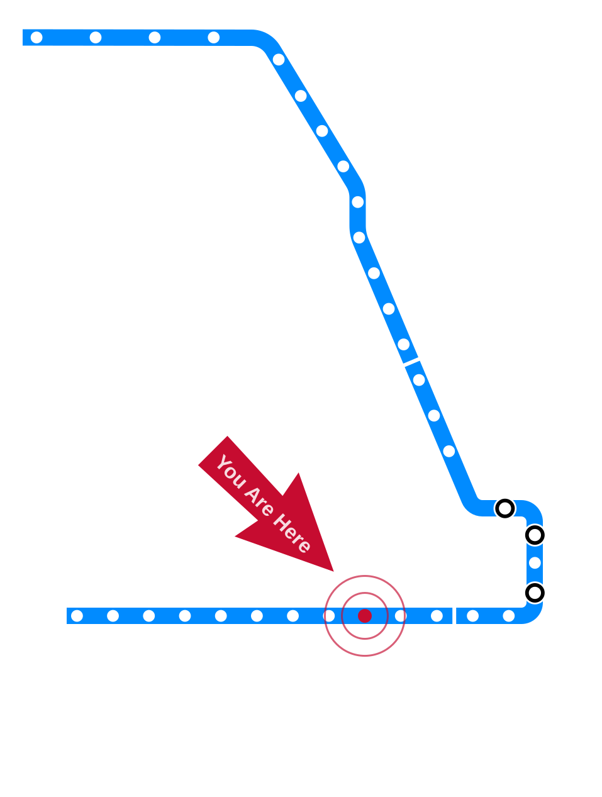

Introduction to Care Ethics
CS 377, Week 3, Day 2 🟦 Illinois Medical District 🟦
Introduction to Care Ethics
CS 377, Week 3, Day 2 🟦 Illinois Medical District 🟦
Agenda for Today
- Administrivia and questions
- Meet our TA!
- Shuffle seats
- Trolley Problems
- Why read a book?
- Mini-lecture: Care ethics

Meet our TA!
Attendance
- What is something you are looking forward to?
🔀 Seat Shuffle
- TODO: add image — room diagram — lectern “0”, tables 1–8, projector screens, door
Trolley Problems Debrief
Table Discussion: Share your trolley problem(s)!
- Describe the dilemma.
- What was your inspiration?
- What would you choose?
- What is a potential name for the dilemma?
- Share definitions of happiness and its opposite (if time)
Student trolley problems
- TODO: add image — selected student-authored trolley dilemmas from this semester (add each term)
The Trolley Problem in the Wild
- From r/trolleyProblem
- From “How the Trolley Problem Explains 2016” by Clio Chang, The New Republic
- TODO: add image — r/trolleyProblem meme and New Republic illustration
Trolley Breakdown
- What do you think of this dilemma?
- Have you seen or encountered any similar real-world dilemmas?
- Why do you think the trolley imagery has persisted?
- TODO: add image — street trolley photo, credit Aaron Henkin / WYPR
Choosing a Book
Brief aside: “Why Read a Book?”
“Why read a book?”
- Reason #1: Feed and follow your curiosity
- Reason #2: Get used to self-directed learning
- Reason #3: Learn from human experts
- Reason #4: Escape in-depth
Table Discussion: Which book will you read?
- Any specific topics you are looking for?
- Any genre you are drawn to? (i.e. biography, essays, memoir, non-fiction, sci-fi, etc.)
- Recommendations for others?
- Any concerns about making a selection by Sunday?
Introduction to Care Ethics
Mini-lecture: introduction to care ethics
Care
A species of activity that includes everything we do to maintain, contain, and repair our world so we can live in it as well as possible.
— Joan Tronto and Bernice Fischer
our bodies, our selves, our environment
Two psychologists
Erik Erikson
Lawrence Kohlberg
- TODO: add image — portraits of Erikson and Kohlberg
Kohlberg and Gilligan
Kohlberg’s stages of moral development
The Heinz Dilemma
A lady was dying because she was very sick. There was one drug the doctors said might save her. This medicine was discovered by a man living in that same town. It cost him $400 to make it, but he charged $4000 for just a little bit of it. The sick lady’s husband, Heinz, tried to borrow enough money to buy the drug. He went to everyone he knew to borrow the money. But he could only borrow half of what he needed. He told the man who made the drug that his wife was dying, and asked him to sell the medicine cheaper or let him pay him later. But the man said “No, I made the drug and I am going to make money from it.” So Heinz broke into the store and stole the drug.
Should Heinz have stolen the drug? Why or why not?
Common Considerations in the Heinz Dilemma
- “He would be breaking the law”
- “Steal the drug and accept the consequences (prison)”
- “Would this upset his friends and/or his family?”
- “Take the drug and save an innocent life; there should be no consequences in a just society”
- Others?
- TODO: add image — Heinz dilemma illustration via RebelMango on YouTube
Kohlberg’s stages
- Preconventional stages: external motivations, punishment, obedience, self-interest
- Stage 1: Punishment and Obedience Orientation (“It depends on who he knows on the police force.”)
- Stage 2: Instrumental-Relativist Orientation (“If his wife is nice and pretty, he should do it.”)
- Conventional stages: some internalization, approval of others, law and order
- Stage 3: Good Boy, Nice Girl (“He should do it because he loves his wife.”)
- Stage 4: Law and Order Orientation (“Saving a human life is more important than protecting property.”)
- Postconventional stages
- Stage 5: Social Contract Orientation (“Society has a right to insure its own survival.”)
- Stage 6: Universal Ethical Principles (“Human life has supreme inherent value.”)
- TODO: add image — Kohlberg stages pyramid diagram (built up across three slides in the original)
Gilligan’s PhD Advisors
Erik Erikson
Lawrence Kohlberg
Table Discussion: the Porcupine and the Moles
- See handout
The Porcupine and the Moles
- Gilligan found that Kohlberg’s theory did not explain all responses to the Heinz Dilemma
- Some children focused on the fractured relationships
- Similar case for the porcupine and the moles
- Creative proposals for keeping all parties content
Carol Gilligan
- Received her PhD in psychology in 1964 from Harvard
- Started at UChicago
- Wanted to study draft resistors
- Richard Nixon changed draft laws in 1973
- Continued focus on children’s moral development
- Briefly left academia for dance
- TODO: add image — photo by Sasha Arutyunova / New York Times / Redux / eyevine
What Is Care?
What is care, exactly?
- A practice, a value, a disposition, or a virtue?
First do no harm
First do no harm. Then do what’s best for the patient.
— Samira in The Pitt (TV Series), 5:00pm, Season 1
What is care, exactly?
- A practice, a value, a disposition, or a virtue?
- Yes
- Joan Tronto proposed four “elements” of care
- Attentiveness — noticing others’ needs, recognizing vulnerability
- Responsibility — accepting duty, deciding to act to meet a need
- Competence — skill/knowledge in delivering care, meeting needs successfully
- Responsiveness — considering the recipient’s perspective, adjusting if needed
Contributors to Ethics of Care
- TODO: add image — photo collage of care ethics contributors
Reminders
- Book selection due Sunday, 11:59pm
- Care ethics reflection due Sunday, 11:59pm
- Next week
- review ethics theories
- “Food in your feed” exercise
That’s all for today!
See you next class!
References & Credits
- GitHub source: https://github.com/jackbandy/ethical-issues-in-computing-uic/blob/main/docs/slides/week3.md.
- Day 1 title photo: Illinois Medical District CTA, view of Rush University Medical Center by Zol87, via Wikimedia Commons, CC BY 3.0.
- Street trolley photo credit Aaron Henkin / WYPR.
- Kohlberg stages illustration via RebelMango on YouTube.
- Carol Gilligan photo by Sasha Arutyunova / New York Times / Redux / eyevine.
- Clio Chang, “How the Trolley Problem Explains 2016,” The New Republic.
- The Heinz Dilemma and the Porcupine and the Moles.
- Slide deck built with Quarto and Reveal.js.
{kind=link}
 Ethical Issues in Computing (CS 377)doethics.fun/slides
Ethical Issues in Computing (CS 377)doethics.fun/slides